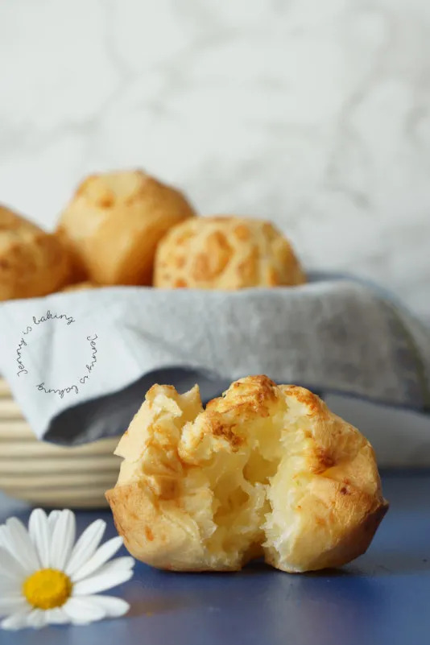

Home
Paraguayan Chipas

Description
Paraguay's easy and delicious take on cheese bread. Naturally gluten-free, it can be served as an appetizer,
snack or
party food!
Ingredients
- 100 grams of Gouda or Edamer cheese, grinded
- 60 gr canola oil
- 150 grams of milk
- ½ teaspoon of salt, optional pepper to taste
- 2 eggs
- 240 grams of manioc/tapioca/cassava flour
- Optional: ½ teaspoon of aniseed
Steps
- Grease muffin tin with oil and preheat oven to 220°C.
- Place all ingredients into a strong food processor and mix on high for about two minutes. Alternatively
mix by hand mixer on high. Batter will be rather liquid.
- Fill muffin forms about half with a spoon and wipe away any spills.
- Bake for 18-20min or until golden. Serve immediately, as chipa tend to taste best during the first few
hours.